In Class Assignment 8
- 1) Create a Products table. The structure is given in the following image
-
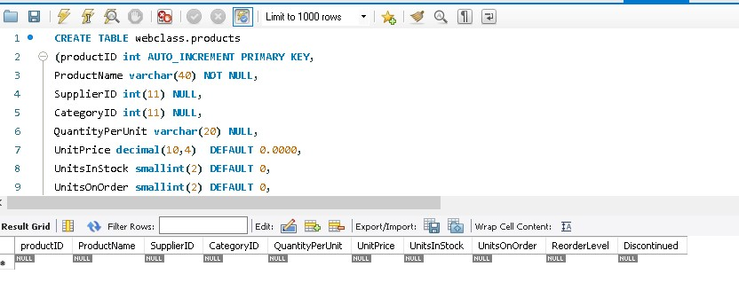
-
CREATE TABLE webclass.products
(productID int AUTO_INCREMENT PRIMARY KEY,
ProductName varchar(40) NOT NULL,
SupplierID int(11) NULL,
CategoryID int(11) NULL,
QuantityPerUnit varchar(20) NULL,
UnitPrice decimal(10,4) DEFAULT 0.0000,
UnitsInStock smallint(2) DEFAULT 0,
UnitsOnOrder smallint(2) DEFAULT 0,
ReorderLevel smallint(2) DEFAULT 0,
Discontinued bit(1) DEFAULT 0);
- 2) If you create 1, right; you can directly use the following lines to insert
values/ rows into the table
-
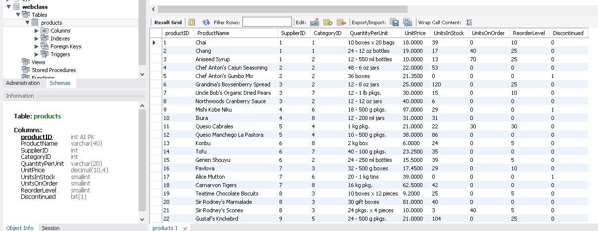
-
INSERT INTO `Products` (`ProductID`, `ProductName`, `SupplierID`, `CategoryID`,
`QuantityPerUnit`, `UnitPrice`, `UnitsInStock`, `UnitsOnOrder`, `ReorderLevel`,
`Discontinued`) VALUES ...
SELECT * FROM webclass.products;
- 3) Write a query to get Product name and quantity/unit.
-
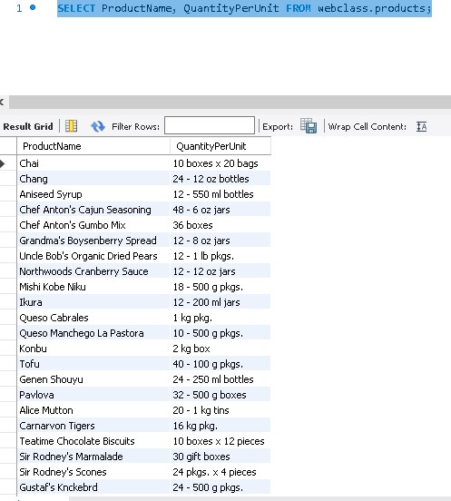
-
SELECT ProductName, QuantityPerUnit FROM webclass.products;
- 4) Write a query to get current Product list (Product ID and name)
-
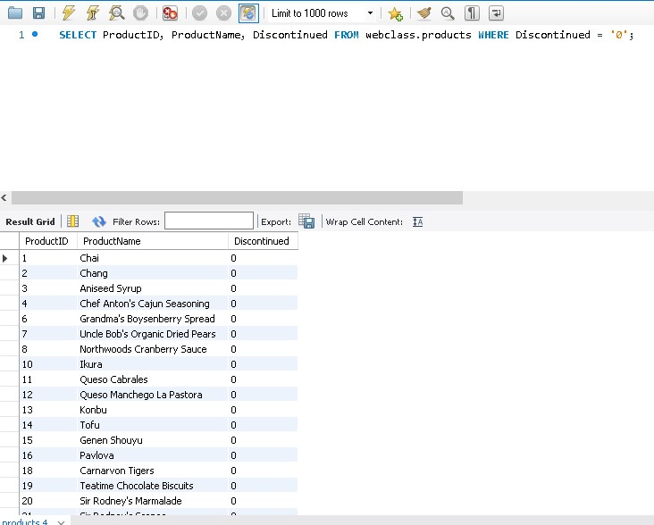
-
SELECT ProductID, ProductName, Discontinued FROM webclass.products WHERE Discontinued = '0';
- 5) Write a query to get discontinued Product list (Product ID and name).
-
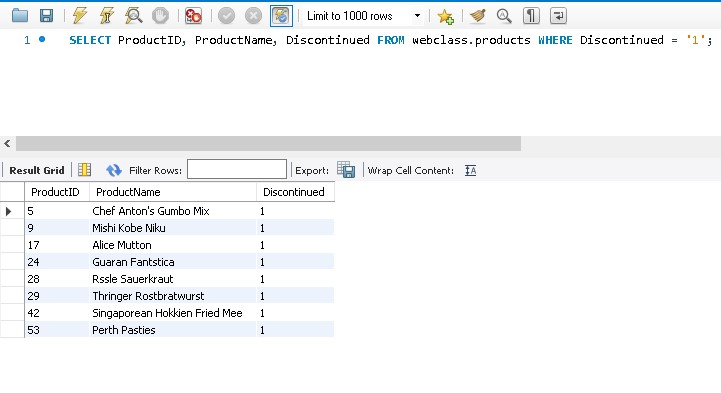
-
SELECT ProductID, ProductName, Discontinued FROM webclass.products WHERE Discontinued = '1';
- 6) Write a query to get most expense and least expensive Product list (name
and unit price)
-
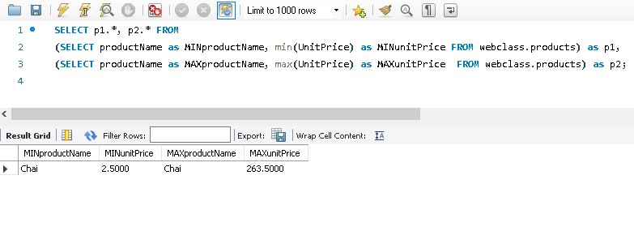
-
SELECT p1.*, p2.* FROM
(SELECT productName as MINproductName, min(UnitPrice) as MINunitPrice FROM webclass.products) as p1,
(SELECT productName as MAXproductName, max(UnitPrice) as MAXunitPrice FROM webclass.products) as p2;
- 7) Write a query to get Product list (id, name, unit price) where current
products cost less than $20.
-
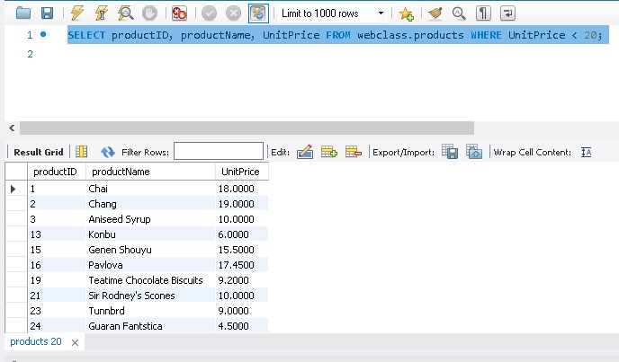
-
SELECT productID, productName, UnitPrice FROM webclass.products WHERE UnitPrice < 20;
- 8) Write a query to get Product list (id, name, unit price) where products cost
between $15 and $25.
-
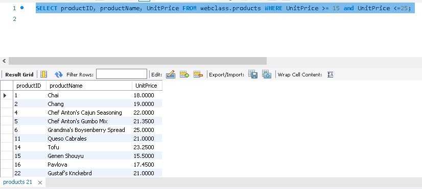
-
SELECT productID, productName, UnitPrice FROM webclass.products WHERE UnitPrice >= 15 and UnitPrice <=25;
- 9) Write a query to get Product list (name, unit price) of above average price.
-
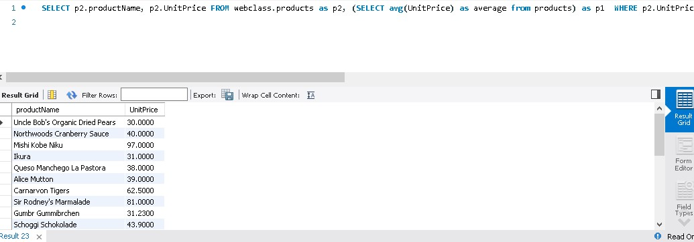
-
SELECT p2.productName, p2.UnitPrice FROM webclass.products as p2, (SELECT avg(UnitPrice) as average from products) as p1 WHERE p2.UnitPrice > p1.average
- 10) Write a query to get Product list (name, unit price) of ten most expensive
products.
-
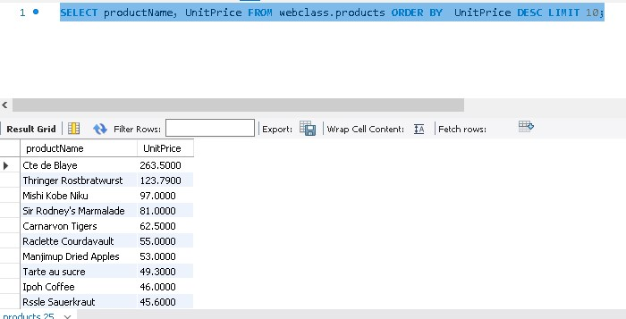
-
SELECT productName, UnitPrice FROM webclass.products ORDER BY UnitPrice DESC LIMIT 10;
- 11) Write a query to count current and discontinued products.
-
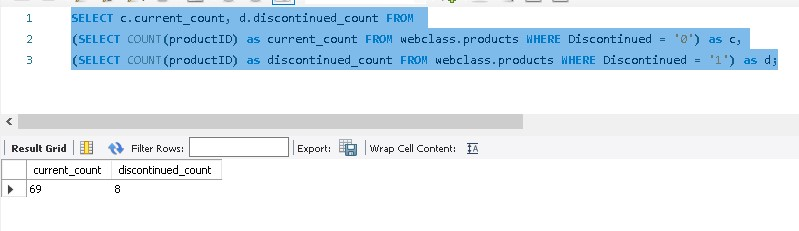
-
SELECT c.current_count, d.discontinued_count FROM
(SELECT COUNT(productID) as current_count FROM webclass.products WHERE Discontinued = '0') as c,
(SELECT COUNT(productID) as discontinued_count FROM webclass.products WHERE Discontinued = '1') as d;
- 12) Write a query to get Product list (name, units on order , units in stock) of
stock is less than the quantity on order.
-
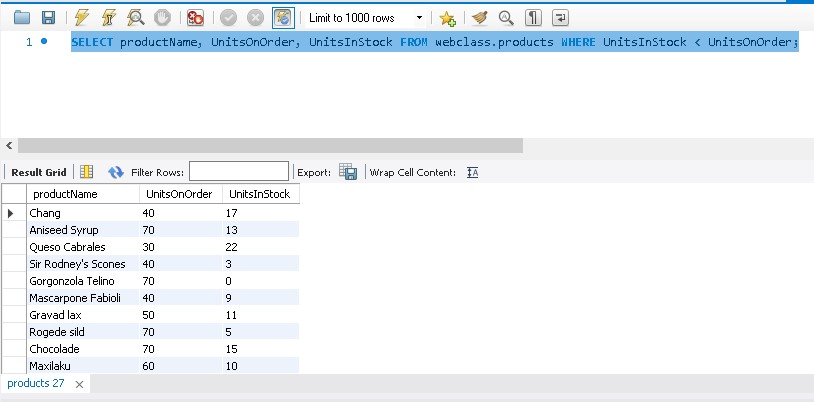
-
SELECT productName, UnitsOnOrder, UnitsInStock FROM webclass.products WHERE UnitsInStock < UnitsOnOrder;